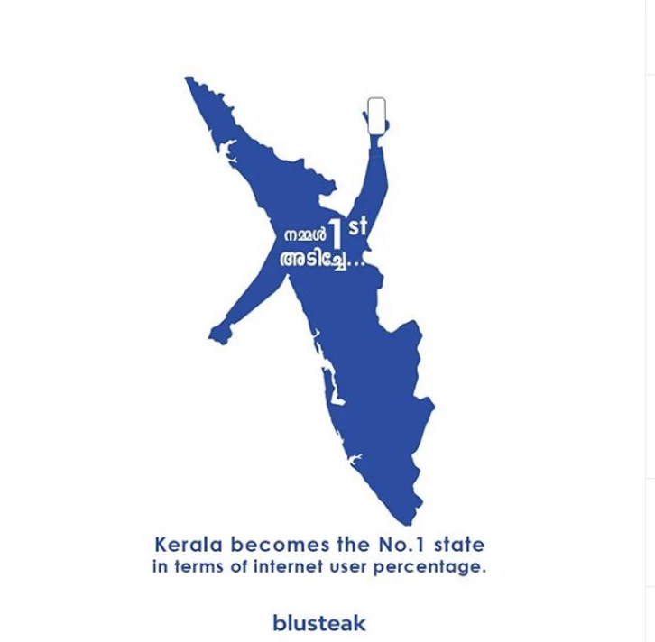
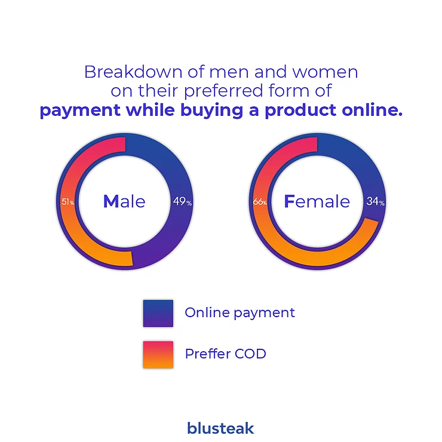

In this article, we will be providing valuable & key information on digital marketing in the southern Indian State of Kerala which we learnt from our ( Blusteak Media 's) past four years of exposure in the market.
Kerala is the top state in India in accordance to the percentage of internet users with 54% of its population having access to the internet is any form.
Calculating in accordance with this data, approximately 18 million (1.8 crore) people are connected to the internet in Kerala.
The real question is, among this 18 million, how many are active social
media/internet users?
We try to answer this by looking at the number of the most followed
influencers in Kerala.
Some among them are
Karikku, M4Tech, Village food channel etc.. (Youtubers)
The most popular channel, Karikku has 4 million subscribers. The most
followed facebook account, which is the page of Actor Mohanlal has 4.9
Million likes. Fukru, the top Tiktok influencer boasts 3.5 million
followers on the platform. The biggest Facebook group GNPC has 2.1
million people interacting inside it.
To come to a conclusion the number of daily active internet user would
come around 5 to 6 million. (50 Lakh to 60 lakh)
Content made in the native language of Kerala, which is malayalam,
outperforms contents in English language by a staggering 85%
Also, using manglish - typing Malayalam with English letters helps in
reaching to NRIs who does not know how to read malayalam.
What comes on the first page of Google really impacts customer
acquisition.
51% of users search in Google about a product/service before they do a
transaction
. Local listing sites like Quick Kerala, Justdial, Sulekha ranks high in
Google results.

Above all, having a good Google maps page is crucial. Reviews, pictures
and other details adds to the credibility of the brand.
Placing advertorials and native ads on top news portals such as
manoramaonline and mathrubhoomi can help in raising brand awareness and
credibility.
Cash on delivery dominates the ecommerce market in Kerala. More than 60% of individuals prefer cash on delivery (COD) over online transactions. UPI payment services such as Google Pay, Phonepe & PayTM comes second to COD.
Having a good Instagram account helps a lot in converting to purchases, there is a 70% more probability to buy from a brand with which a customer engage.
Major share of the youth consumes news and trending topics via troll
videos, troll images & meme accounts. This is the main channel of online
marketing campaigns by the film industry.
As of now major brands are also entering the scenario with the intention
of making their brand ads or campaigns to get trolled in order to reach
a huge chunk of common man.
As of 2020, taking a broader look, internet as a medium for marketing in kerala is proving to outperform print, visual and radio ads - if tailored effectively.
[About the author: Jaison Thomas is an entrepreneur, speaker & writer. He co-founded the digital marketing agency, Blusteak .]


 +91 77366 95526
+91 77366 95526
 info@blusteak.com
info@blusteak.com